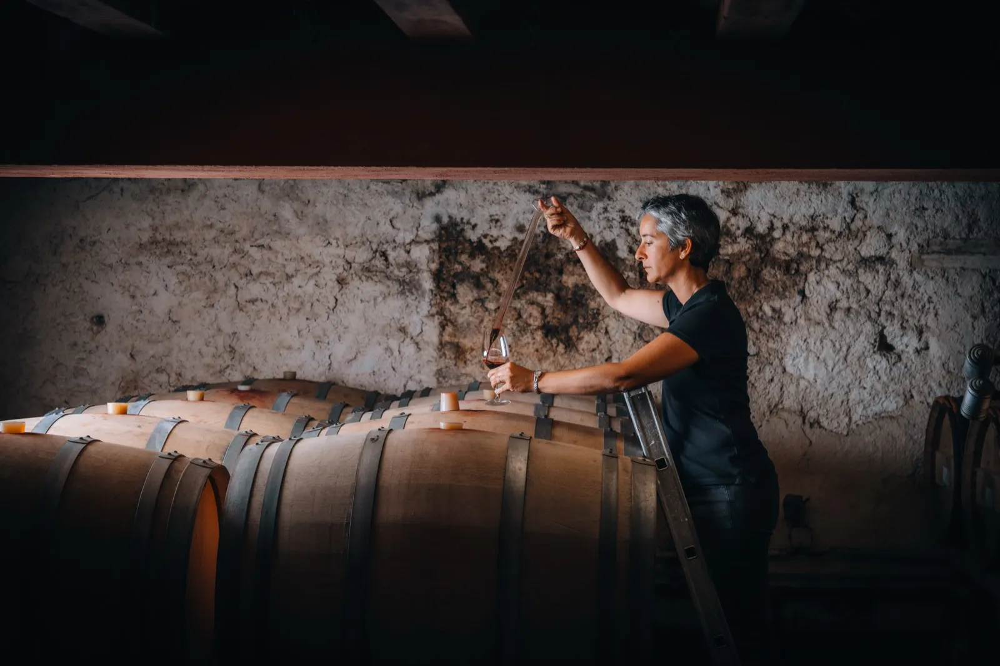
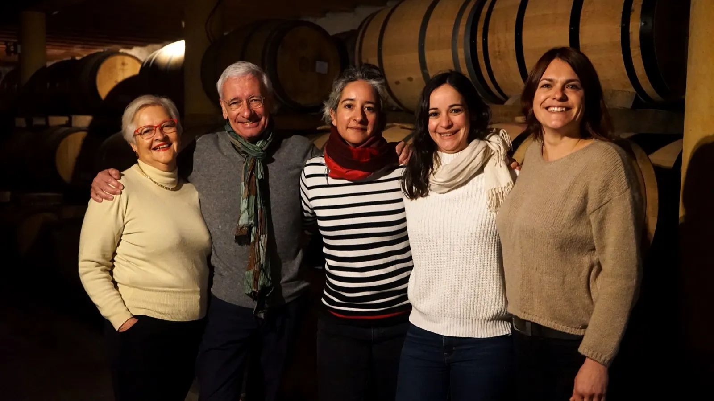
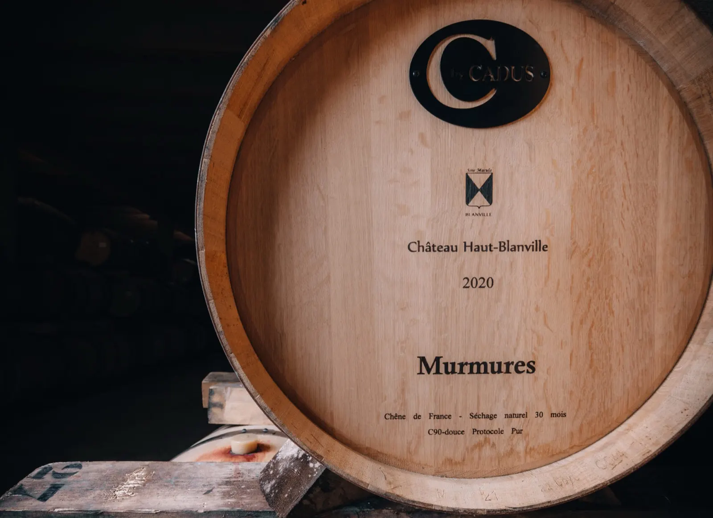
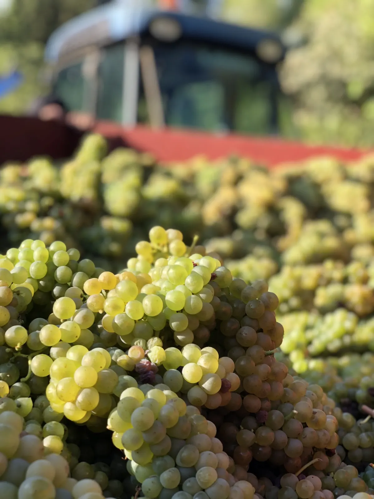
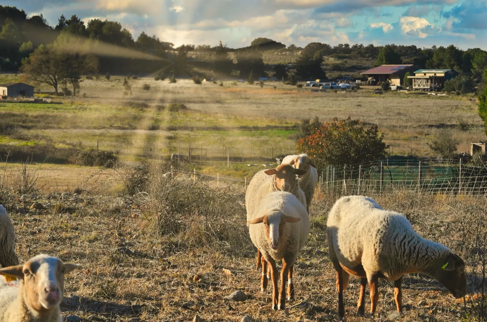
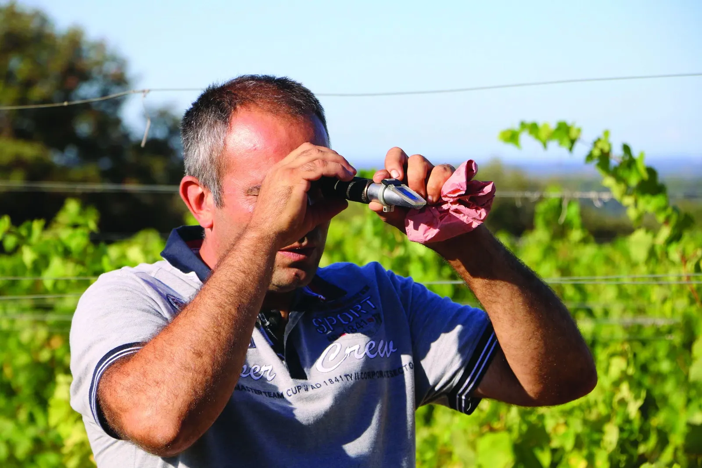
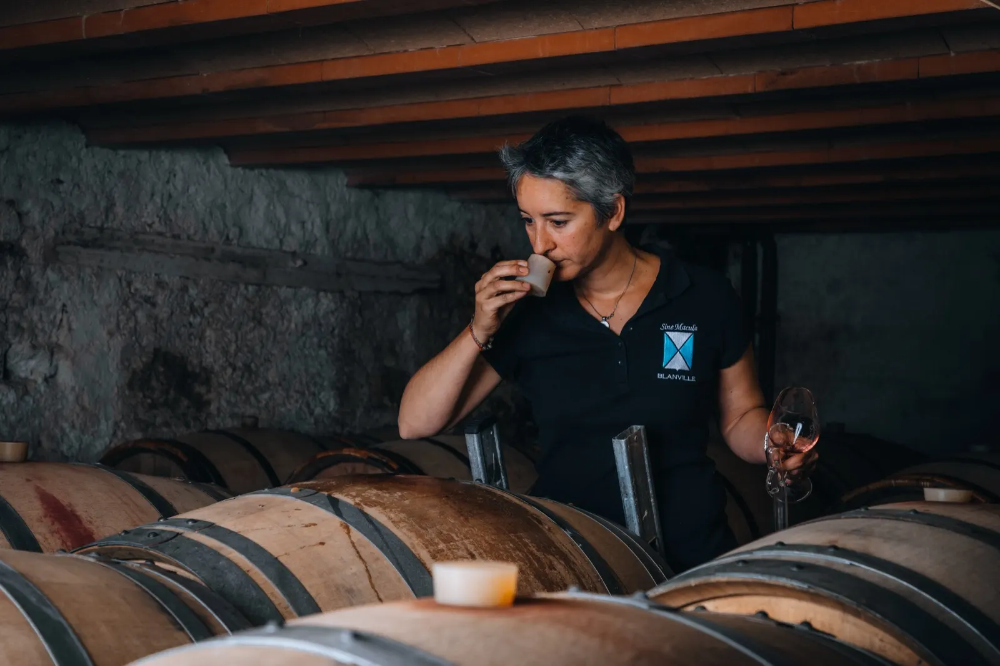
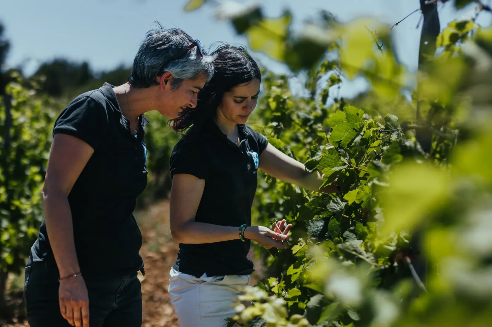
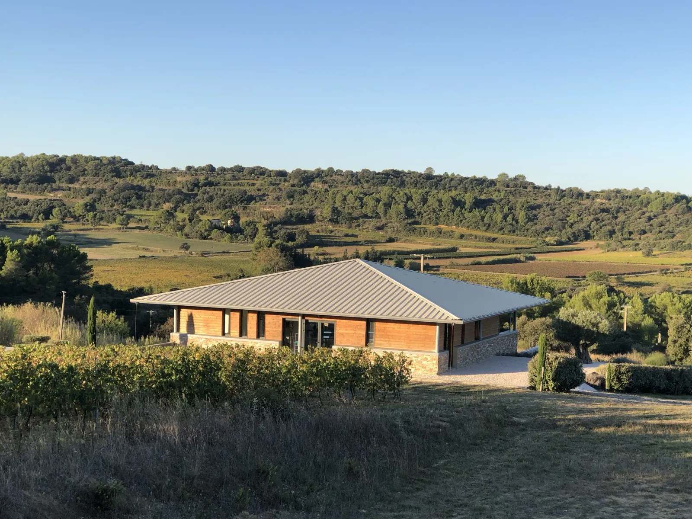

Grands vins du Languedoc
Domaine familial en agriculture biologique, fondé en 1997 à Saint-Pargoire, dans l'Hérault.
- 1997
- fondé par Béatrice et Bernard Nivollet
- Bio
- tous nos terroirs, dès le millésime 2024
- HVE
- Haute Valeur Environnementale depuis 2019
- 33 pays
- Château Haut-Blanville présent dans plus de 33 pays
- Vegan
- tous nos Clos et Blends
D'un projet de couple à une aventure en trio féminin
Fondé en 1997 par Béatrice et Bernard Nivollet, le domaine de Blanville, à Saint-Pargoire, est au cœur des appellations AOP Languedoc Grès de Montpellier et AOP Languedoc Pézenas.
En 2015, l'aventure s'intensifie avec l'arrivée d'une jeune équipe, dont Charlotte et Margaux, les filles des fondateurs. En 2022, face aux défis climatiques et pour préserver la biodiversité, Blanville crée le Domaine des 8 Lunes à Roujan, cultivé selon les principes de la biodynamie.

- De gauche à droite :
- Béatrice Nivollet, fondatrice
- Bernard Nivollet, fondateur et président
- Charlotte Nivollet, responsable production
- Margaux Nivollet, responsable logistique
- Marion Mathelin, responsable commerciale
Artisans du vin
Plongez dans l'univers de nos vins parcellaires et découvrez l'incroyable diversité des terroirs du Languedoc. Chaque bouteille raconte une histoire, celle d'un sol, d'un climat et d'un savoir-faire ancestral.
Révélateurs de pépites
En tant que négociant vinificateur, nous collaborons avec des vignerons qui partagent nos valeurs pour vous offrir le meilleur du Languedoc.
Nos domaines
La Maison Blanville se répartit aujourd'hui en quatre gammes distinctes.
Château Haut-Blanville
Domaine historique, vins de garde et mono-parcellaires sur le terroir des Grès de Montpellier.
Domaine des Celtis
Vins jeunes sur le fruit, sur l'aire d'appellation AOP Languedoc Pézenas.
Depuis 2021Domaine des 8 Lunes
Cépages oubliés du Languedoc en biodynamie, à Roujan.
Depuis 2022Les Créations by Blanville
Pépites sauvages de la jeune génération.

Château Haut-Blanville
Créé en 1997 avec 10 ha de vignes minutieusement sélectionnées à l'extrême sud-ouest de l'aire d'appellation AOP Languedoc Grès de Montpellier, le vignoble a été construit parcelle par parcelle pendant 22 ans.
Pionnier en Languedoc des vins mono-parcellaires, « de la vigne à la bouteille », souvent mono-cépage et à longs élevages, il est largement reconnu à l'international.
Les Créations by Blanville
Pépites sauvages de la jeune génération.
En 2021, les cuvées de la deuxième génération de Blanville voient le jour : des vins plus jeunes, fruités et sans élevage en barriques. Avec le Domaine des Celtis, Les Créations enrichissent la collection Blanville et permettent d'apprécier des vins dès leur jeunesse.

Un savoir-faire artisanal
Le but des vins parcellaires : révéler un micro-climat et mettre en valeur au maximum un terroir donné. La sélection commence à la vigne, où l'équipe choisit année après année les vignes de chaque cuvée. À la cave, Charlotte et François procèdent à une seconde sélection et ne gardent que les meilleures barriques de chaque parcelle.
- Pas d'irrigationGarrigues préservées : au terroir des Peyrals, 20 ha de vignes sur 40 de garrigues.
- Agriculture biologiquePas de produits de synthèse.
- Embruns marinsUn terroir haut en altitude, proche de la Méditerranée : équilibre, salinité et minéralité.
- Petits rendementsBelle concentration et respect de la vigne.
- Jachères de 3 ansAvec des légumineuses pour nourrir la terre, et des couverts végétaux.
- Pâturage de brebisAu sein même du vignoble.



« Cette minutieuse sélection, de la vigne à la bouteille, permet de créer des vins rares, complexes et uniques, révélant à leur maximum le terroir dont ils sont issus. »
Oenotourisme, visite et dégustation
Venez découvrir nos terroirs, nos chais à barriques et notre travail. Une visite hors du temps au milieu de nos vignobles, en trois temps sur 3 h : la découverte de nos terroirs, puis la visite de nos chais, puis la dégustation.
Une demi-journée consacrée au vin et à la vigne
Uniquement sur rendez-vous, de mai à septembre. 10 personnes au plus par groupe.
150 €
la visite jusqu'à 6 personnes, puis 15 € par personne supplémentaire. Dès 300 € d'achat, nous vous remboursons la visite.

Dégustation gratuite au caveauLes 3 cuvées du moment, sur rendez-vous en semaine.

Location pour vos plus beaux événements
Une salle de réception de 120 m² avec vue sur la garrigue héraultaise, une cuisine entièrement aménagée, des WC aux normes PMR et le mobilier pour une quarantaine de convives assis (au plus environ 60 personnes assises et 80 debout). À louer le temps d'un week-end.
Voir la locationNous rendre visite
Nous n'avons pas de permanence au caveau : un simple coup de téléphone pour prévenir, et nous vous accueillons avec plaisir en semaine pour préparer au mieux votre dégustation.
Horaires
Du lundi au vendredi,
de 9h à 12h et de 13h30 à 17h30.
Dégustation sur rendez-vous.
Adresse
Château Haut-Blanville
Rieutort, route de Gignac (D32)
34230 Saint-Pargoire
Sur la RD32 entre Gignac et Montagnac, à 10 km au nord de Pézenas et à 35 km de Montpellier.